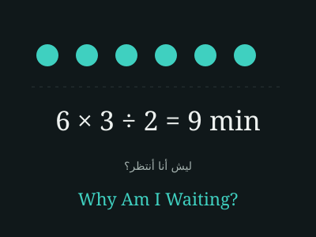

Why Am I Waiting? ليش أنا أنتظر؟
Know how long until your turn before you go.
اعرف كم باقي على دورك قبل ما تروح.
Status: In Progress
Concept
This project is still in progress and is not a completed product. It aims to help people estimate their waiting time at places such as restaurants, cafés, shops, clinics and government services.
How the estimate works
The estimate is a transparent calculation: the number of people ahead of you, multiplied by the average service duration, divided by the number of service providers. For example, 6 people × 3 minutes ÷ 2 providers = 9 minutes.
Intended flow
- Search for a place and choose the branch
- Enter how many people are ahead of you
- Set the average service duration and the number of active service providers
- See the expected waiting time with the calculation shown
- See possible reasons for the delay
Visual
More projects
Forsah فرصة · Alef ألف · Solven سولفن · Why Am I Waiting? ليش أنا أنتظر؟